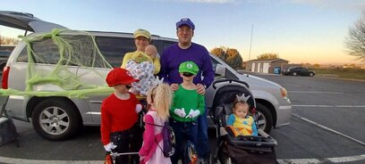
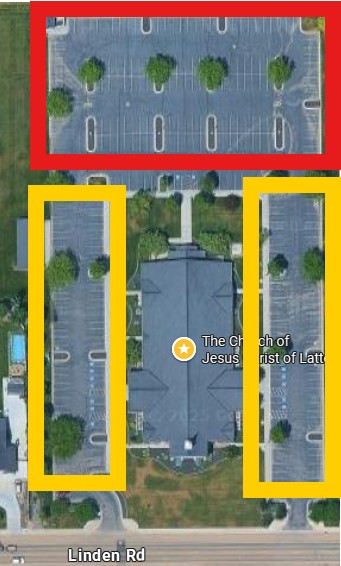

Ward Trunk-or-Treat & Chili Cook-off
Welcome to the Ward Trunk-or-Treat page! The season is changing and the leaves are falling. It's the perfect time for our annual Trunk-or-Treat event!

Join us for a fun evening of costumes, candy, and community spirit. Decorate your car trunk and bring treats to share with the children of our ward.
Get creative with costumes and trunk decorations!
This event we will be having our Chili Cook-off and Cornbread as well!
Details
- Date: Saturday, October 25th, 2025
- Time: Chili Cook-off: 6:00 PM - 7:00 PM
Trunk-or-Treat: 7:00 PM - 8:00 PM - Location: Stake Center - Linden Building
- Chili Cook-off: Bring your best chili recipe to compete for the title of "Best Chili in the Caldwell 5th Ward!"
- Trunk-or-Treat: Decorate your car trunk and bring treats to share with the children of our ward.
- Parking:If you are participating in the Trunk-or-Treat, please park in the red section. If you are not participating in the Trunk-or-Treat,please park in the yellow section.

Trunk-or-Treat Calendar: